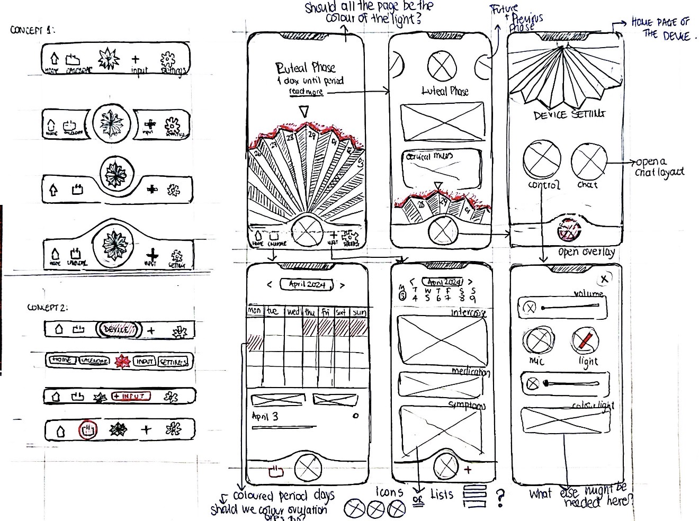
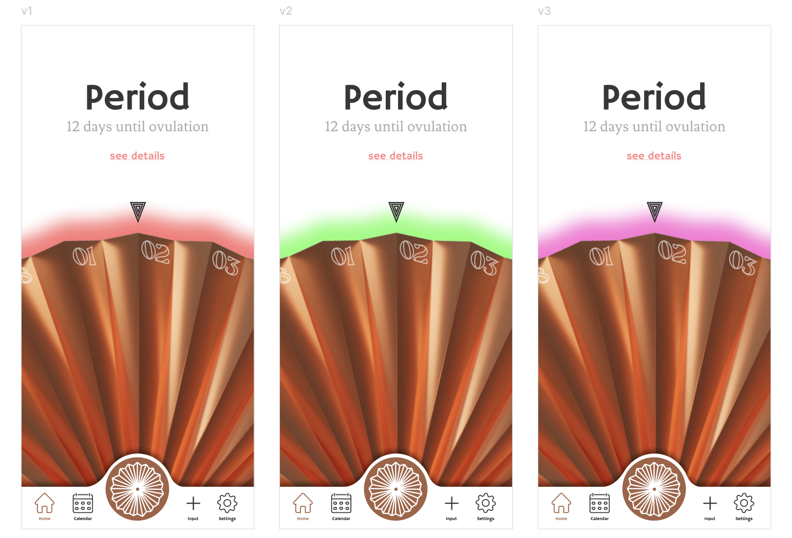

§ 10
Decision 03
the fan, again
The fan, at the centre of every screen.
The deciding question wasn't which navigation was cleaner. It was which one was honest about what the product is, a device with a companion app, not an app with an accessory.

This concept won because the geometry told the story. The fan-shaped central button anchors every screen the way the device anchors the user's day, placing the AI assistant at the literal centre of the app, where it lives in the room.
Three themes, chosen on the device.
The NeoPixel ring offers three gradients. The app reads that choice and tints every screen to match. Pink is one option, never the default.
Red → Orange
Green → Yellow
Pink → Purple

A custom icon library.
Drawn line by line, not pulled from a stock pack. Forty-plus marks across symptoms, cycle states, input categories, and device controls, all at one consistent stroke weight.